Главная
post4ytb@gmail.com
2-сторонняя печатная
плата своими руками
ДЛЯ
ПРОСМОТРА ПОЛНОМАСШТАБНОГО ИЗОБРАЖЕНИЯ КЛИКНИТЕ ПО КАРТИНКЕ
Видео:
тест: ширины дорожек и зазоров 0,1мм и меньше, тест принтеров
(разрешение 600 и 1200 dpi). На
примере платы для гарнитуры в фотографиях представлена
последовательность изготовления ДВУСТОРОННЕЙ печатной платы. Особое
внимание уделено совмещению обоих слоев, качеству травления.
Для
изготовления платы по описанной методике в PCB-файл,
подготовленный для заказа плат, нужно внести некоторые
поправки.
Скопируйте PCB-файл и работайте с копией, так как внесенные поправки
приведут к уменьшению диаметров всех отверстий.
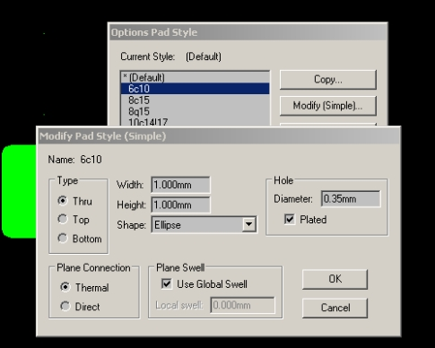
Для
всех отверстий платы, включая переходные, установите диаметр
0,2мм - это обеспечит вытравливание маленькой площадки в центре
контакта для попадания сверла даже при ручном сверлении.
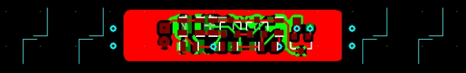
Обозначаем
границы печати маркерными линиями (маркерами) - тонкими линиями,
которые должны совпасть при совмещении рисунков обоих слоев
двусторонней платы.
Печать будет выполняться в два этапа, и эти же маркеры при первой
печати покажут границы будущего отпечатка и его размер.
В P-CAD маркеры можно выполнить в слоях TOP ASSY и BOTTOM ASSY линиями
толщиной 0,1мм.
Пригодятся
и переходные контакты с отверстиями левее и правее рисунка платы - если
их просверлить, будет ясно, как корректировать наклон сверла - об это
читайте ниже.
Маркеры отрисовываются в одном слое, например, TOP ASSY.
Так как на бумаге, которая используется для получения отпечатков, есть
надписи и графика с обратной стороны (см следующий рисунок), желательно
сделать несколько маркеров в разных местах, тогда будет больше шансов,
что какой-то из них окажется вне зоны надписей и его будет лучше видно
на просвет при совмещении двух отпечатков.
Отрисованные
маркеры выделяются (SELECT), копируются с перемещением (выделенные
маркеры перемещаются мышкой при нажатой клавише CTRL), например, на
один шаг сетки.
Следите, чтобы после этой операции ВЫДЕЛЕНИЕ
МАРКЕРОВ СОХРАНИЛОСЬ - не делайте других операций до завершения
описываемых далее действий!
Измените слой на BOTTOM ASSY, а в меню Edit выберите команду Move to
Layer.
Теперь ВЫДЕЛЕННЫЕ маркеры, оказавшиеся в слое BOTTOM ASSY,
совмещаются с маркерами в слое TOP ASSY.
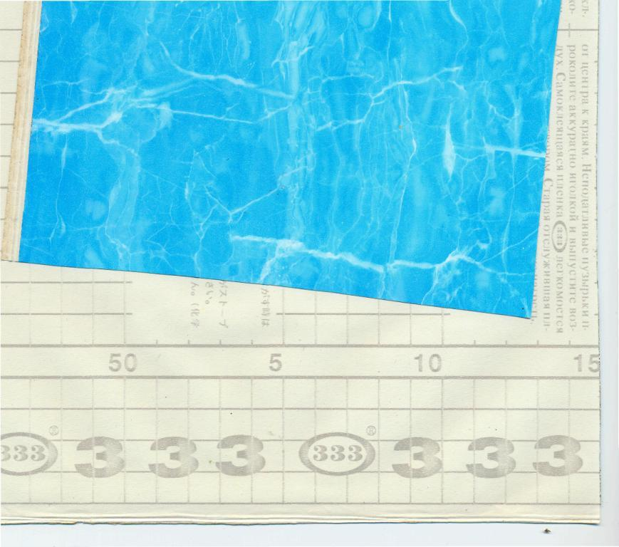
Отпечаток изображения платы выполняется на лазерном принтере
на подложке самоклеящейся пленки.
На рисунке изображены лицевая сторона самоклейки и ее подложка с
надписями "333".
Подложка имеет глянцевую поверхность, что позволяет легко отделить от
нее клеевую поверхность самоклейки,
на
подложку хорошо ложится тонер; при нагреве утюгом бутерброда из
подложки с отпечатком и фольгированного стеклотекстолита тонер
прилипает к
фольге платы,
а подложка от самоклейки после остывания легко СНИМАЕТСЯ
С ФОЛЬГИ ПЛАТЫ БЕЗ ОТМАЧИВАНИЯ.
Начнем с печати
одной стороны платы. Действия для печати второй стороны платы будут
такими же.
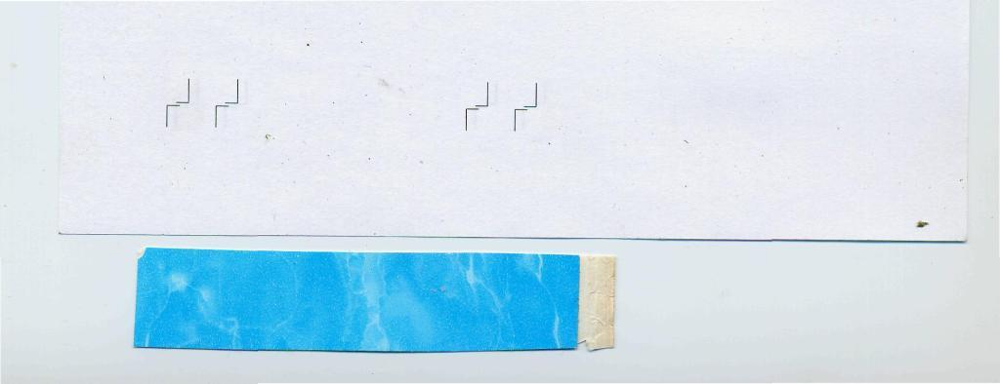
Сначала на бумаге отпечатаем границы, в которых при следующей
печати окажется рисунок нашей платы
Просмотрите картинку в полном
масштабе, чтобы увидеть
на рисунке:
расположенный внизу вырезанный кусок самоклейки, размеры которого
превышают размеры рисунка с маркерами,
вверху - лист бумаги
с отпечатанными на ней маркерами, которые выполняют две
функции:
-показывают, где будет отпечатана плата
-наличие
маркеров на обоих отпечатках платы облегчит их последующее совмещение.
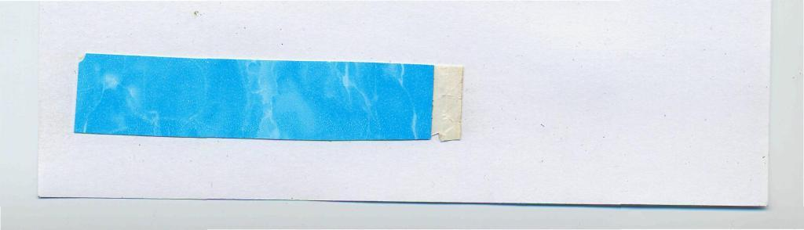
Смазываем
самоклейку со стороны подложки по краям слева и справа клеящим
карандашом и приклеиваем к бумаге так, чтобы маркеры были накрыты
самоклейкой
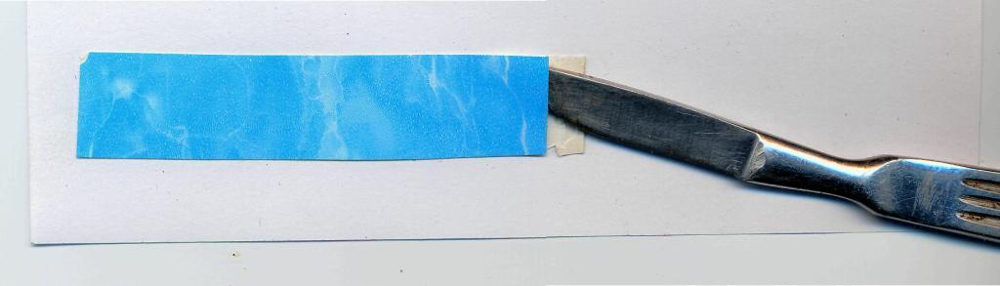
Теперь
отделяем самоклейку от подложки скальпелем и снимаем ее
Не
касайтесь глянцевой поверхности подложки руками!
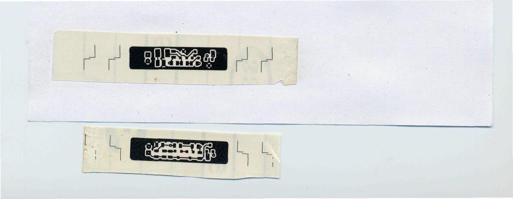
Повторно
печатаем на той же бумаге, но уже с приклеенной подложкой от самоклейки.
На картинке сверху: еще приклеенный к бумаге отпечаток одной стороны
платы,
снизу: ранее отпечатанное изображение другой стороны платы - оба
изображения зеркальны относительно будущего вида самой платы
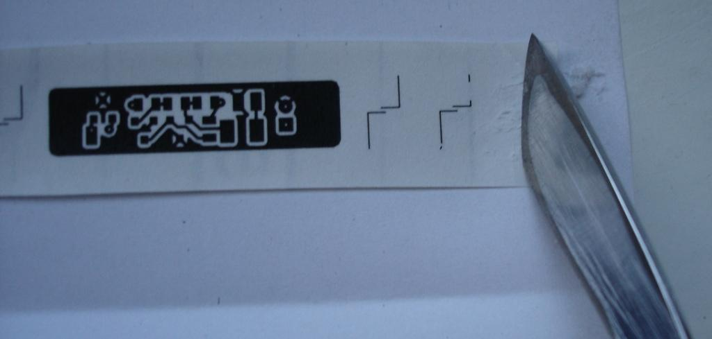
Чтобы
склеить два рисунка, нужно соскрести по краям глянец, это можно сделать
скальпелем. Важно ни на каком этапе не касаться рисунка. Поэтому удобно
работать скальпелем, когда подложка еще осталась приклеенной к бумаге
после печати.
Скрести скальпелем по подложке надо от рисунка, чтобы отходы не
попадали на рисунок.
По окончании работы проконтролируйте чистоту рисунка
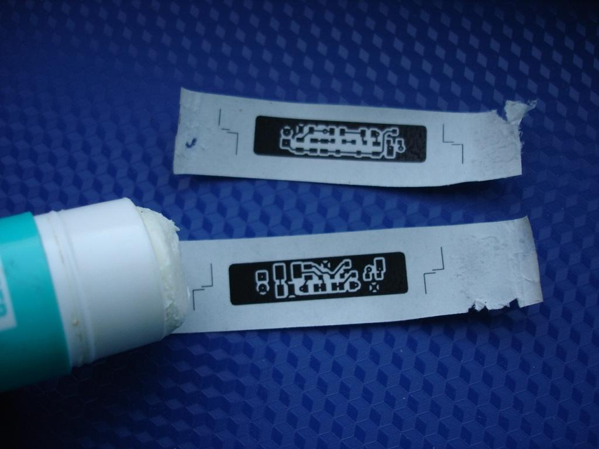
Зачищенные
места смазать клеящим карандашом и склеить, постаравшись совместить обе
картинки.
Клей высохнет не сразу, что позволит выполнить тщательное совмещение с
использованием линзы и источника света.
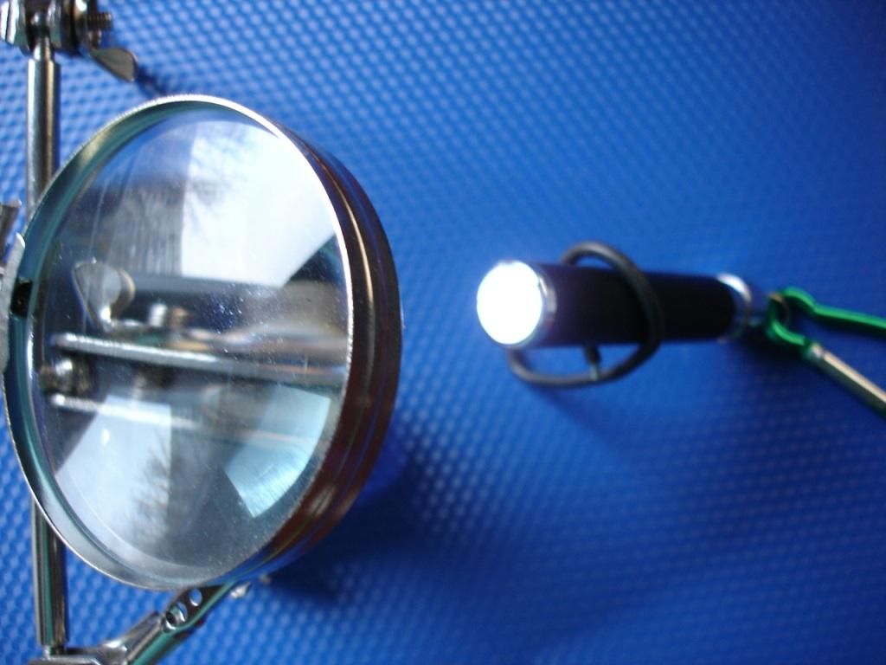
Для
совмещения обоих рисунков понадобится линза и
источник света, желательно, с узкой диаграммой направленности - удобно
использовать светодиодные фонарики: у них яркий свет, а бумаги
сантиметровой ширины с изображением вашей платы будет вполне
достаточно,
чтобы их полностью накрыть и защитить глаза от прямой засветки.
Как
видно на картинке, светодиодный фонарик охвачен алюминиевой проволокой
в черной изоляции, которая выполняет функцию подставки, позволяя
направить луч в нужную сторону.
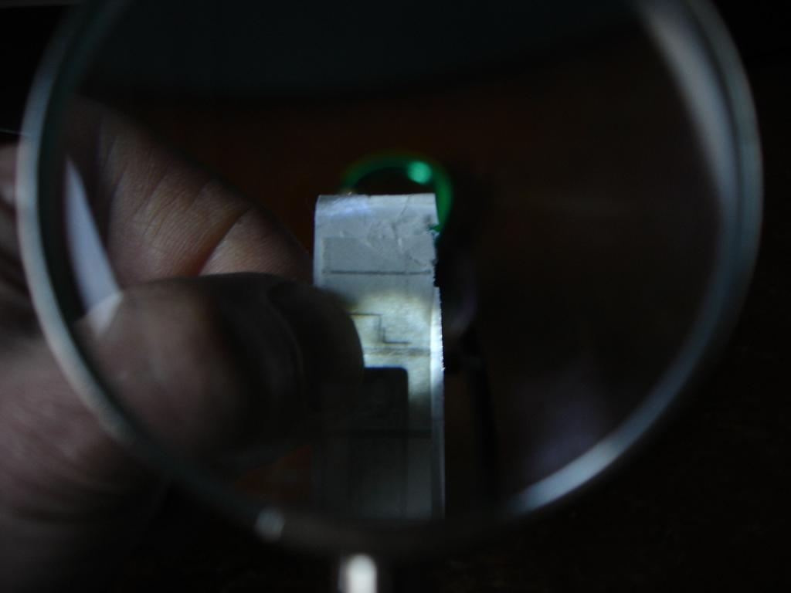
Для
окончательного совмещения удобно пользоваться отпечатанными маркерами в
виде расположенных перпендикулярно с зазором тонких линий.
Дополнительный контроль - просвет в местах совмещения переходных
отверстий.
Подготовка
фольгированного стеклотекстолита к нанесению рисунка
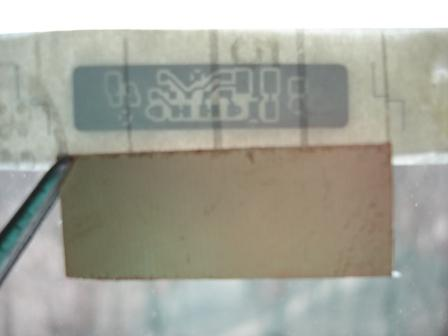
На фото:
сверху - "конверт" из склеенных отпечатков, снизу - заготовка.
Для
заготовки используйте стеклотекстолит с отсутствием царапин на
фольге. Заготовка из фольгированного стеклотекстолита должна
быть
миллиметров на 5 больше рисунка - кроме того, что заготовку с
припусками легче расположить под рисунком, царапины,
появляющиеся
по краю при обрезании заготовки, не попадут в зону рисунка, а заусенцы
можно будет сточить напильником.
Если заготовка вырезана ножницами
по металлу или гильотиной, она может поцарапаться по краям и изогнуться
(пойти винтом), постарайтесь выровнять ее, надавливая заготовку
углами на жесткую поверхность.
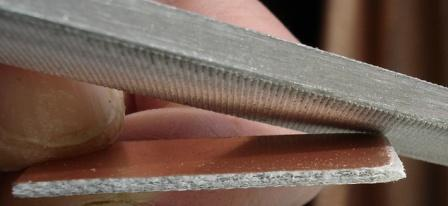
После
выравнивания
обточите заготовку напильником, держа его под острым углом к
поверхности - это дополнительно выровняет края заготовки (не будет
подъемов на краях), и утюг будет лучше прижимать рисунок в центре
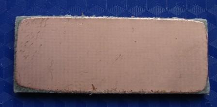
Заготовка
с обработанными краями.
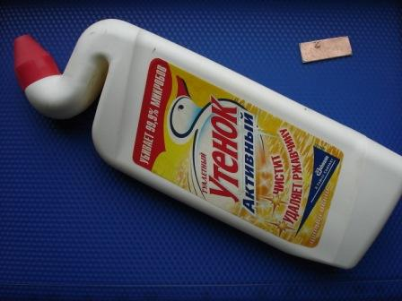
Для очистки заготовки удобно
использовать какой-либо
бытовой кислотосодержащий гель.
Нет
необходимости зачищать заготовку наждаком - мелкие
царапины приведут к неровностям краев дорожек.
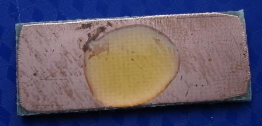
Капните
немного геля на поверхность заготовки
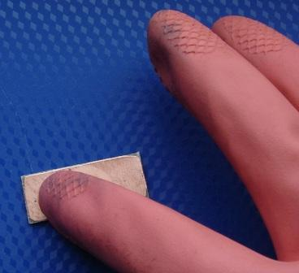
и разотрите его по поверхности. Не
используйте для этого вату или ткань! На торцах платы
останутся волокна,
которые могут попасть под рисунок. Лучше растереть каплю
руками в резиновых перчатках.
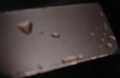
Больше
не касайтесь поверхности заготовки руками, держите ее за торцы.
После промывки водой, на поверхности заготовки могут остаться капли.
Чем меньше повреждений и оставшихся загрязнений на поверхности, тем
меньше капель.
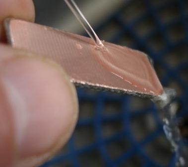
капли
можно смыть тонкой струйкой воды, надо подставить заготовку так, чтобы
струя захватила каплю, затем медленно выводить плату из-под струи,
направляя плату так, чтобы струя в итоге оказалась на одном из углов
платы. Если следы от капель остались, используйте для их удаления рулон
туалетной бумаги - протрите заготовку гранью рулона. Приложите к рулону
и торцы платы.
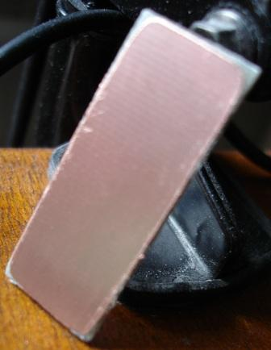
Оставьте
плату в вертикальном положении для окончательной просушки - не
вставляйте плату с непросохшими гранями в отпечаток.
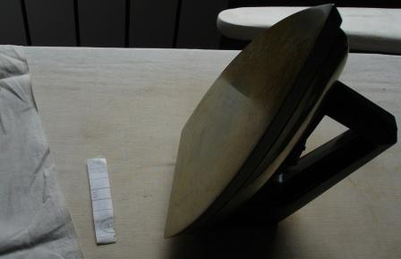
для
перенесения рисунка нужна хлопчатобумажная салфетка, утюг с ровной
подошвой, в качестве рабочей поверхности подойдет гладильная доска.
Заготовка
в конверте из склеенных отпечатков (на картинке она посередине)
накрывается одним слоем ткани. Утюг включается на средний
нагрев
(шерсть), прогревается.
После прогрева утюга придавите им заготовку
в конверте, накрытую тканью, подержите несколько секунд неподвижно,
чтобы тонер пристал к фольге, затем можно двигать утюг по ткани.
Следите,
чтобы ткань не сдвигалась утюгом (обычно этого не
происходит).
Если вы не уверены, что заготовка под утюгом, можно приподнять утюг,
затем установить его точно над платой.
Нет
необходимости двигать по плате ребром подошвы утюга.
Следите
лишь за тем, чтобы утюг равномерно прилегал к поверхности заготовки во
время движения, покачивайте его иногда, чтобы почувствовать,
что
он придавливает всю поверхность заготовки.
Достаточно накатывать
рисунок с одной стороны в течение 50-60 секунд (регулировку
температуры, вероятно, придется подбирать для вашего утюга
экспериментально).
Сразу
же переверните ГОРЯЧУЮ заготовку на другую сторону и повторите процедуру:
подложка самоклейки 333 после остывания может самопроизвольно
отделиться от тонера и заготовки.
Дайте
пакету из двух подложек и заготовки остыть. После остывания аккуратно
снимите подложки с одной, затем с другой стороны заготовки. Во время
удаления подложек смотрите, не осталось ли на них тонера, это поможет
понять, хорошо ли перенесся рисунок на заготовку.
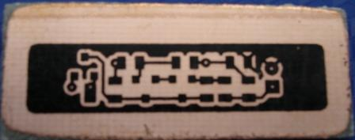
рисунок
нанесен на заготовку. Тщательно проверяем, нет ли дефектов, для этого
лучше воспользоваться линзой.
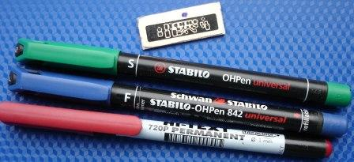
Если
есть места, к которым не прилип тонер, закрасьте их тонким перманентным
маркером (маркеры 1мм, S или F). На заготовке дефектов нет, для
тестирования маркера нанесем им небольшое пятно на заготовку (на
картинке с маркерами на заготовку нанесено пятно выше рисунка).
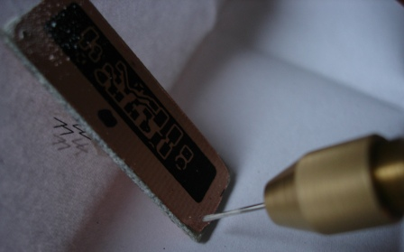
Для
подвешивания заготовки в растворе хлорного железа просверлим два
отверстия в заготовке по углам, так, чтобы продетая через них
леска не касалась рисунка.
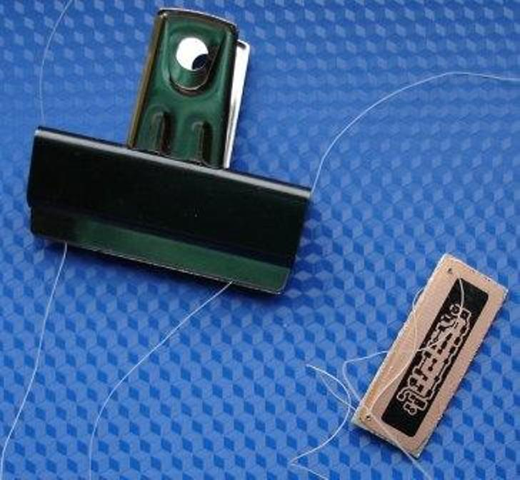
Один
конец лески вставляем в оба отверстия с одной стороны - так чтобы леска
перехлестывала срез платы (см. картинку в крупном масштабе), тогда
плата будет висеть без наклона. Леску удобно зажать прищепкой - проще
будет подергивать плату во время травления и леска не свалится в
раствор.
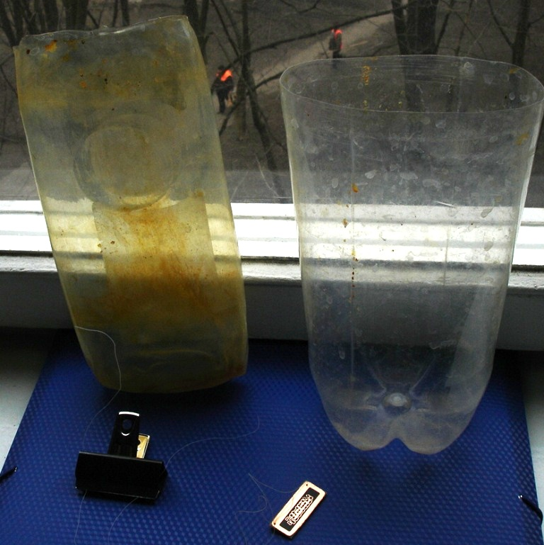
Лучше
всего травить плату на водяной бане в вертикальном положении,
иногда подергивая плату - для подергивания нет необходимости
использовать электродвигатели или соленоиды: время травления 5...20
минут в зависимости от качества и температуры раствора. Удобно
использовать прозрачные контейнеры. Для раствора хлорного
железа -
плоский от какого-нибудь шампуня, для горячей воды - из 2-литровой
ПЭТ-бутылки.
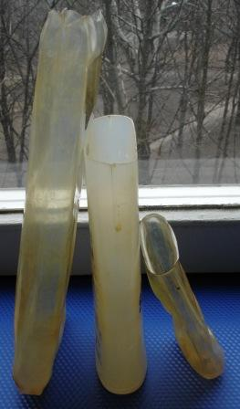
контейнеры
для плат разного габарита - позволяют использовать минимум раствора.
Любимый контейнер - левый: он плотно входит в контейнер с горячей
водой, не всплывает и не наклоняется, имеет большой запас по высоте -
хлорное железо с платы переходит на его стенки, когда плату вынимаешь
для контроля или промывки.
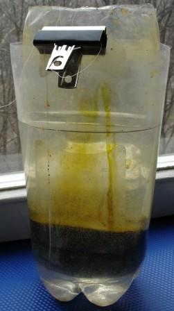
Плата
травится в контейнере с хлорным железом, который погружен в горячую
воду. Периодически плата приподнимается за прищепку для контроля и
подергивается несколько раз. При аккуратном наливании горячей воды
контейнер сух снаружи, обычно стоит рядом с компьютером, за которым во
время травления работаю. Т.к. контейнер при этом несколько мешает - о
нем не забудешь, как при использовании соленоида или двигателя для
подергивания, а плата не перетравится.
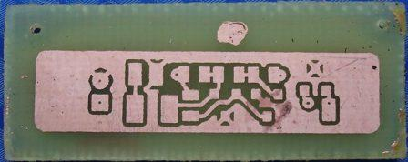
Плата
после травления. Пятно, оставленное маркером для теста над рисунком,
хорошо защитило фольгу.
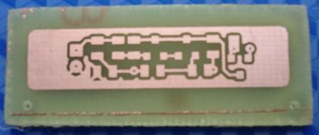
хорошо
протравились центры переходных отверстий и контактных площадок.
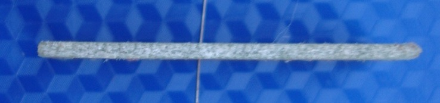
Даже
при тщательном совмещении
сторон возможно смещение центров переходных отверстий.
На фото - плата с торца; проволока продета сквозь отверстие - заметен
небольшой наклон.
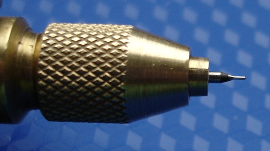
Чтобы
отверстие проходило через центры контактных площадок, можно сверлить
плату заточенным обломком сверла (на фото свело 0,3мм, длина рабочей
части порядка 1,5мм).
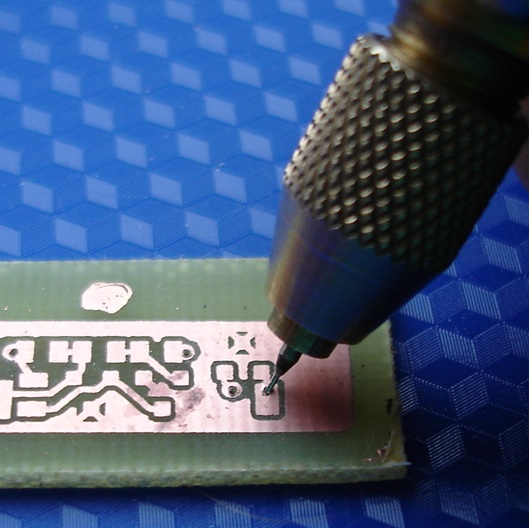
При
проходе через фольгу сверло держится вертикально, затем выполняется
наклон (на картинке наклон преувеличен). Сверление выполняется не до
конца, затем то же делается с другой стороны платы, в результате
отверстия выходят по центру контактов с обеих сторон платы.
Обычно,
чтобы понять, надо ли наклонять сверло и в какую сторону,
достаточно сделать сквозное отверстие, которое должно сверлиться
сверлом бОльшего диаметра (например, под вывод или под проводник) -
смещение отверстия на другой стороне платы покажет, как корректировать
угол наклона. Для больших плат лучше сделать несколько таких отверстий
по краям - возможно неодинаковое растяжение рисунка при печати
и
переносе тонера.
С этой же целью наряду с маркерами,
располагаемыми по границам рисунков для совмещения отпечатков, можно
там же разместить по паре переходных контактов с отверстиями 0,35мм
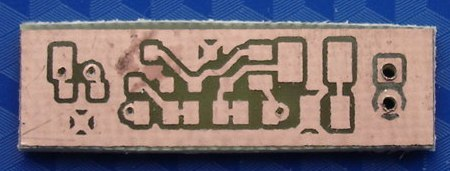
Плата
обрезана
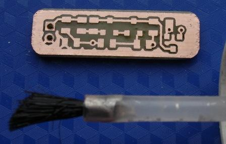
обточена напильником, края скруглены (плата будет помещена
в термоусадку), покрыта флюсом
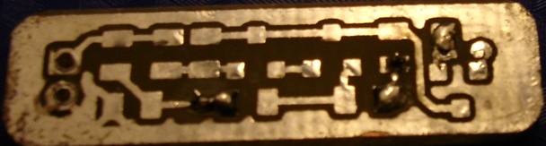
залужена,
в переходные отверстия впаяны отрезки проволоки.
монтаж можно посмотреть здесь